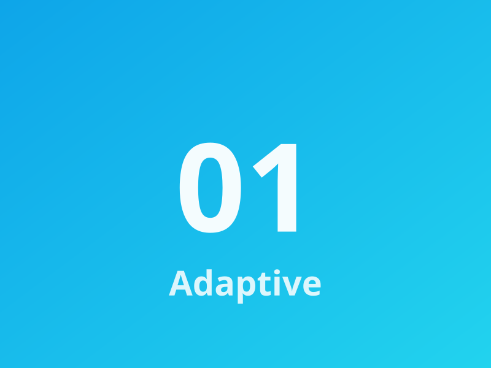
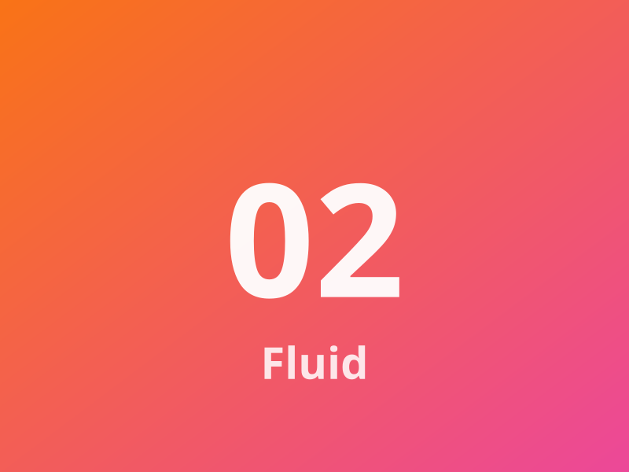
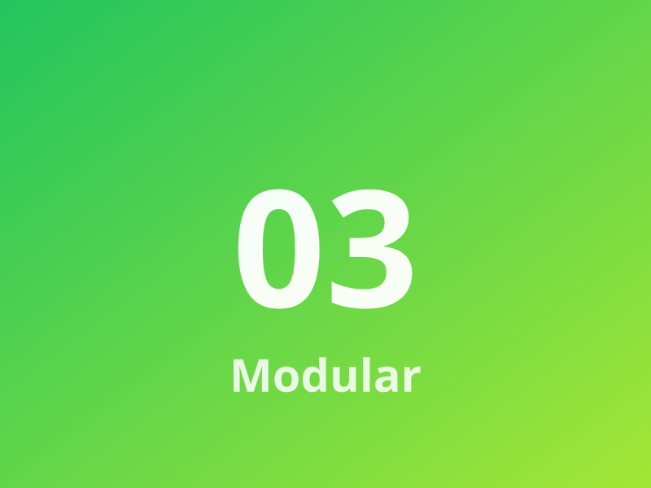
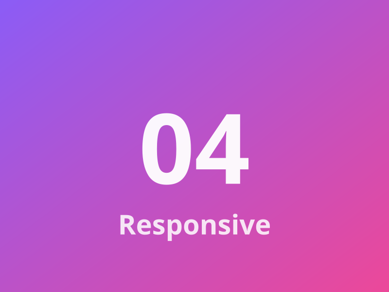

Adaptive
Contenedor con imagen y texto que se reorganiza automáticamente según el ancho disponible del viewport.
Cuatro tarjetas que pasan de cuatro columnas en escritorio a una sola columna en móvil usando CSS Grid.

Contenedor con imagen y texto que se reorganiza automáticamente según el ancho disponible del viewport.

El espaciado entre tarjetas y dentro de ellas se ajusta con unidades relativas para mantener consistencia en todas las resoluciones.

Cada tarjeta encapsula su propia imagen y bloque de texto, lo que facilita reutilizar y mantener la maqueta.

La cuadrícula usa media queries para ajustar el número de columnas a escritorio, tableta y móvil sin romper el flujo del contenido.